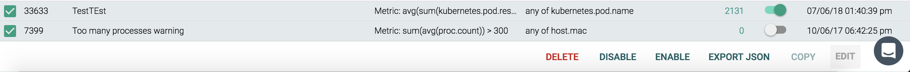

Alerts
Alerts form the framework for Sysdig's monitoring capabilities, notifying users when an event/issue occurs that requires their attention. The Alerts module displays a complete list of all existing alerts, as well as providing create/edit functionality for users to create their own alerts, or modify existing ones, to tailor the monitoring facility to the infrastructure's particular needs.
Note
Host comparison alerts are also configurable for one-to-many comparisons between an individual host and its associated group.
Setting up alerts involves two basic steps:
Prerequisite: Configure the notification channels you want to use for alert notification.
Configure alerts by defining an alert type, name, parameters, notification channel to be used, etc.
When an alert notification is sent (for example, when it is triggered, marked as resolved in the web UI, or when it ceases triggering) it contains the following information:
The name of the alert.
The type of notification: active, resolved, or OK.
The value of the segmentation. For example, when segmenting on
host.hostNamethe relevant hostName will be provided.
Note
Sysdig will at times deprecate metrics that are no longer utilized. Alerts that use these metrics will not be modified or disabled, but will no longer be updated. For more information, refer to the Heuristic and Deprecated Metrics documentation.
Contents
Alert Types
There are currently five types of alerts available in Sysdig Monitor:
Alert Type | Description | |
|---|---|---|
Downtime | Monitor any type of entity (e.g. host, container, process, service, etc), and alert when the entity goes down.
| |
Metric | Monitor time-series metrics, and alert if they violate user-defined thresholds. | |
Event | Monitor occurrences of specific events, and alert if the total number of occurrences violates a threshold. Useful for alerting on container, orchestration, and service events like restarts and deployments. | |
Anomaly Detection | Monitor hosts based on their historical behaviors, and alert when they deviate. | |
Group Outlier | Monitor a group of hosts and be notified when one acts differently from the rest. |

Configure Alerts
Open the Alert Wizard
There are multiple ways to access the Alert wizard:
From the Explore table, select the Alert (bell) icon beside an entity:
From the Explore table, click the More Options (three dots) icon for the table, and select Create a New Alert:

From the Explore table or the Dashboards module, click the More Options (three dots) icon for a panel, and select Create Alert:

From the Alerts module, click the Add Alert button:

From the Alerts module, click on an existing alert, either by clicking directly on the alert, or by selecting the check box beside the alert, and clicking the Edit button:

Configure an Alert
The Alert wizard provides users with the ability to create a new alert, or edit an existing alert.
Configure the notification channels you want to use before you begin, so the channels are available for assignment during alert configuration.
Note
Sysdig Monitor also allows for alerts to be created via the Sysdig API. For more information, refer to the API Alerts documentation.
To configure an alert:
Select the desired Alert Type.
Note
When editing an existing alert, the wizard hides the ability to change the alert type
Define the alert name.
Optional: Add a description for the alert.
Define the alert, by configuring what the alert should look for, the scope of the alert, and the boundaries for triggering the alert.
Configure the notification channels the alert should use if triggered, whether a notification should be sent every 30 minutes if the issue remains unresolved, and the format of the message.
Optional: Configure a Sysdig capture.
Note
Sysdig capture files are not available for event alerts.
Click the
CreateorSavebutton to save the alert.
Manage Alerts
Alerts can be managed individually, or as a group, by using the checkboxes on the left hand side of the module interface, and the customization bar at the bottom of the interface. The columns of the table can also be configured, to provide users with the necessary data for their use cases.
Enable/Disable Alerts
Alerts can be enabled or disabled using the customization bar:
From the Alerts module, check the boxes beside the relevant alert/s.
Click the
Enablebutton or theDisablebutton as necessary.Note
The
Enable/Disablebuttons are only visible if a relevant alert is selected. For example, in the first image below, only theDisablebutton is visible, as the alert selected is currently enabled:
In the image below, both buttons are visible, as an enabled alert and a disabled alert are visible:

Configure the Alerts Table Columns
To configure the visible columns:
From the Alerts module, click the
Table Columns Configuration(three dots) icon.
Check the boxes beside each desired column.
Click the
Applybutton to save the changes, theRestorebutton to return the table to the original configuration, or theCancelbutton to revert to the previous configuration.
Search for an Alert
The Alerts table can be searched using partial or full strings. For example, the search below displays only events that contain kubernetes:
 |
Edit an Existing Alert
To edit an existing alert:
Click the checkbox beside the alert:

Click the
Editbutton on the customization bar:Edit the alert, and click the
Savebutton to confirm the changes.
Copy an Alert
Alerts can be copied within the current team to allow for similar alerts to be created quickly, or copied to a different team to share alerts.
Copy an Alert to the same team
To copy an alert within the current team:
Click the checkbox beside the alert to be copied.
Click the
Copybutton on the customization bar:Check that the
Current Teamoption is selected.Rename the alert, and click the
Copy and Openbutton to save the changes.
Copy an Alert to a Different Team
To copy an alert within the current team:
Click the checkbox beside the alert to be copied.
Click the
Copybutton on the customization bar:Select the
Other Team(s)option.Open the
Select Teamdrop-down menu, and click the checkbox beside the team/s that the alert should be copied to:
Rename the alert, and click the
Send Copybutton to save the changes.
Export Alert JSON
A JSON file can be exported to a local machine, containing JSON snippets for each selected alert:
Click the checkbox/es beside the relevant alert/s to be exported.
Click the
Export JSONbutton on the customization bar:
Delete Alerts
To delete one or more alerts:
Click the checkbox/es beside the relevant alert/s to be deleted.
Click the
Deletebutton on the customization bar:Click the
Yes, Delete Alert/sbutton to confirm the changes.
Advanced Alert Thresholds
Advanced alerts allow users to define alert thresholds as custom boolean expressions that can involve multiple conditions. These advanced alerts require specific syntax, as described in the examples below.
Format and Operations
The correct format is:
condition1 AND condition2 condition1 OR condition2 NOT condition1
The order of operations can also be altered via parenthesis:
NOT (condition1 AND (condition2 OR condition3))
Conditions take the following form:
groupAggregation(timeAggregation(metric.name)) operator value
Each condition has five parts:
The metric name
Warning
Exact metric names must be used. To avoid typos, click the
HELPlink to access drop-down list of available metrics. Selecting a metric from the list will automatically add the name to the threshold expression being edited.Group aggregation (optional)
Note
If no group aggregation type is selected, the appropriate default for the metric will be applied (either sum or average).
Note
Group aggregation functions must be applied outside of time aggregation functions.
Time aggregation
Operator
Value
The table below displays supported time aggregation functions, group aggregation functions, and relational operators:
Time Aggregation Function | Group Aggregation Function | Relational Operator |
|---|---|---|
timeAvg() | avg() | = |
min() | min() | < |
max() | max() | > |
sum() | sum() | <= |
>= | ||
!= |
Several example advanced alerts are shown below:
timeAvg(cpu.used.percent) > 50 AND timeAvg(memory.used.percent) > 75 timeAvg(cpu.used.percent) > 50 OR timeAvg(memory.used.percent) > 75 timeAvg(container.count) != 10 min(min(cpu.used.percent)) <= 30 OR max(max(cpu.used.percent)) >= 60 sum(file.bytes.total) > 0 OR sum(net.bytes.total) > 0 timeAvg(cpu.used.percent) > 50 AND (timeAvg(mysql.net.connections) > 20 OR timeAvg(memory.used.percent) > 75)